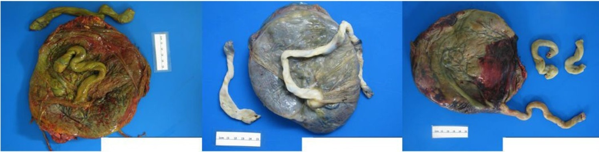

Página 1 · Vigilância aguda e cardiotocografia
"Mecônio não é sofrimento": as 4 portas da vigilância aguda
Gestante de 41 semanas, trabalho de parto evoluindo bem, e na hora em que a bolsa rompe o líquido vem com mecônio. O batimento do feto está estável, sem nenhuma alteração. A pergunta que separa quem lauda de quem se assusta: isso é sofrimento fetal?
Mecônio não fecha diagnóstico
A resposta curta é não — e ela vale ouro na prova. Mecônio isolado não é sofrimento fetal. A presença de líquido meconial, sozinha, não fecha nada. O que transforma mecônio em sinal de alarme é o contexto: um trabalho de parto que vinha bem, com líquido claro, e de repente surge alteração do batimento cardíaco fetal simultânea à saída do mecônio. É a simultaneidade — mecônio novo somado a batimento que muda — que acende a luz vermelha, não o mecônio em si.
Há ainda um segundo motivo para não se assustar numa gestação a termo. Quanto maior a idade gestacional (40, 41 semanas), maior a chance de eliminação de mecônio por maturidade do próprio trato gastrointestinal do feto. O intestino amadurece, ganha peristalse, e elimina mecônio como evento fisiológico. Por isso a regra de ouro se cristaliza assim: mecônio que não é espesso e não vem com alteração do batimento é só mecônio — não é sinônimo de sofrimento. Espesso e com batimento alterado é outra conversa.

Não há foto livre do líquido claro × espesso lado a lado; o polo fisiológico entra como referência rotulada. O polo patológico usa um correlato real de alto valor: a impregnação meconial da placenta — o pigmento do mecônio embebe as membranas amnióticas e o cordão, tingindo-os de verde-acastanhado (leve na do meio, forte e difusa na da esquerda). É o mesmo pigmento que espessa e esverdeia o líquido "ervilha".
Chen Y et al., AI-PLAX, Comput Med Imaging Graph 2020;84:101744, via Wikimedia Commons — CC BY 4.0 · página de origem
As quatro portas de entrada da vigilância aguda
O sofrimento fetal agudo pode ser avaliado por quatro formas: movimentação fetal, microanálise do sangue fetal, ausculta cardíaca (que inclui a cardiotocografia) e perfil biofísico fetal. A abordagem do agudo é objetiva e direta nos diagnósticos diferenciais — não é para floreio.
Das quatro, duas caíram em desuso e quase não aparecem em prova: a movimentação fetal (como método formal de vigilância) e a microanálise do sangue fetal. As duas que dominam prova e prática são a ausculta cardíaca — de tempo em tempo (intermitente) ou pela própria cardiotocografia — e o perfil biofísico fetal. Guarde esse recorte: quando a questão perguntar "como se avalia sofrimento agudo", a resposta operacional gravita em ausculta/CTG e perfil biofísico.
Interativo: toque/clique em cada forma para ver por que ela vige ou caiu.
Passe pelas quatro portas: ausculta/cardiotocografia e perfil biofísico aparecem realçados (as duas vigentes, que dominam prova e prática); movimentação e microanálise vêm esmaecidas (em desuso). A própria hierarquia visual é a lição — cada hotspot revela por que duas dominam e duas caíram.A movimentação fetal na prática
A movimentação não é proibida — ela só não é o exame que decide. Orienta-se a paciente a observar o padrão de movimentação do feto e a entrar em contato quando perceber mudança nesse padrão. É um achado auxiliar, de fácil orientação, baixo custo e sem sobrecarregar a gestante com estresse de vigilância contínua. E, atenção: movimentação fetal não equivale a sofrimento fetal agudo — é sinal de apoio, não diagnóstico.
A orientação formal tem endereço: após uma refeição, deitada em decúbito lateral, com a mão sobre a barriga, espera-se de 5 a 10 movimentos em 1 hora. Se não ocorrer, observa-se por mais 1 hora e então se contata o serviço — sem desespero. A mão sobre a barriga não é detalhe decorativo: sem ela, a paciente não percebe as pequenas movimentações, e o feto ainda passa por ciclos normais de sono.
Por que contar após a refeição — e para quem mais importa
Dois racionais fecham essa orientação e ambos caem. Primeiro: conta-se após a refeição porque a hipoglicemia também faz o feto mexer menos — barriga vazia reduz movimento por causa metabólica, não por sofrimento. Contar em jejum gera falso alarme. Segundo, a indicação: a vigilância da movimentação importa sobretudo no alto risco. O exemplo-âncora é a diabética pré-gestacional (diabética prévia), em que há grande receio de morte súbita intraútero — por isso se orienta a mãe a observar de perto a movimentação. Esse par (diabética prévia → medo de morte súbita → observar movimento) é minúcia cobrável e amarra com a indicação de cardiotocografia seriada que vem na sequência.
A microanálise do sangue fetal
A microanálise é o método objetivo que o tempo aposentou. Colhe-se sangue do couro cabeludo fetal — o que exige dilatação mínima e bolsa rota — para avaliar o pH durante o trabalho de parto e o período expulsivo. É dado objetivo, porém invasivo, e hoje praticamente só sobrevive em pesquisa. Saber que existe e por que foi abandonada basta; ela não é o exame da prática moderna.
Quiz — fixação
Gestante de 41 semanas em trabalho de parto com líquido claro prévio, batimento fetal estável dentro da faixa normal; ao romper a bolsa, sai mecônio fino. Qual a conduta/leitura correta?
- B) Correta. Mecônio isolado, sem alteração do batimento e não espesso, é só mecônio — a termo, ainda mais esperado por maturidade do TGI. Vigia-se o batimento; não se opera por mecônio.
- A) Inverte a regra: transforma achado inespecífico em indicação cirúrgica. O gatilho é mecônio espesso com alteração simultânea do batimento, ausente aqui — a banca conta com o susto do reflexo "mecônio = perigo".
- C) Método abandonado e sem indicação aqui. A microanálise é invasiva, hoje só pesquisa; e o batimento está normal — soa "científico" mas é aposentado e desnecessário.
- D) Mistura dois conceitos. A maturidade do TGI explica a eliminação de mecônio, não bradicardia; e não há bradicardia — usa um termo verdadeiro num lugar errado.
Por que a orientação de contagem de movimentos fetais é feita após uma refeição?
- B) Correta. O racional é metabólico: barriga vazia → hipoglicemia → feto mexe menos, sem que isso seja sofrimento. Comer antes remove o confundidor.
- A) A refeição não é para provocar contração. O objetivo é remover a hipoglicemia como confundidor — associa comida a "estímulo", mas o mecanismo alegado não é esse.
- C) Superdimensiona um achado benigno. Jejum reduz movimento por hipoglicemia, não causa asfixia — confundir "mexe menos" com "asfixiando" é o erro que a orientação previne.
- D) Generaliza regra laboratorial. A cardiotocografia, por exemplo, não exige jejum; ao contrário, o jejum interfere no resultado.
Se a ausculta é uma das duas formas que sobraram, falta o essencial: de quanto em quanto tempo se escuta esse coração — e a partir de quando entra a cardiotocografia.